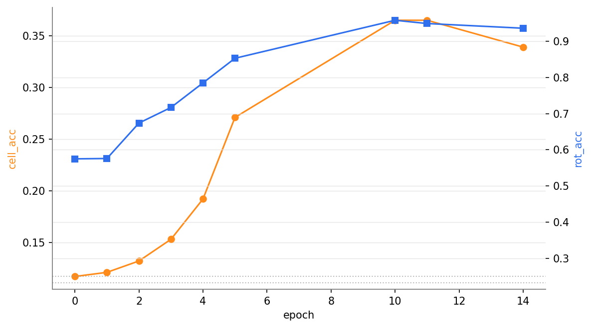
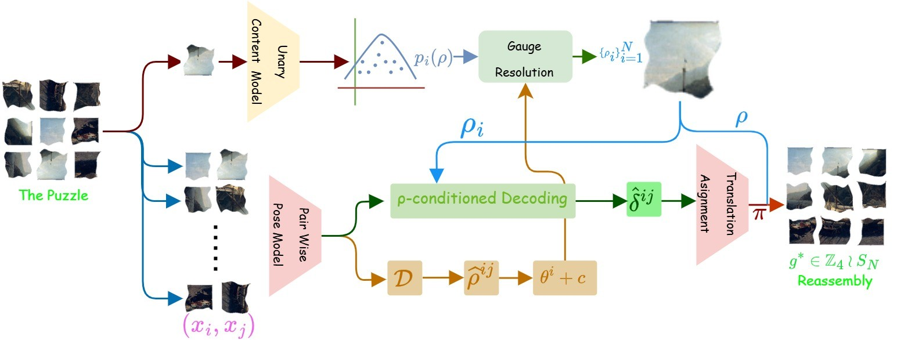
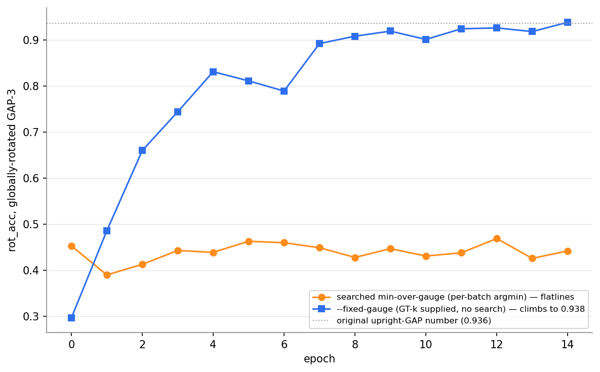
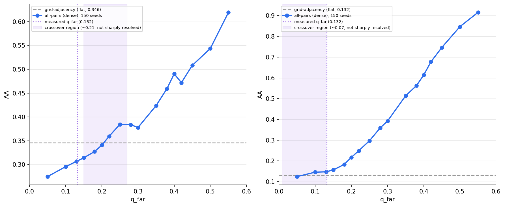
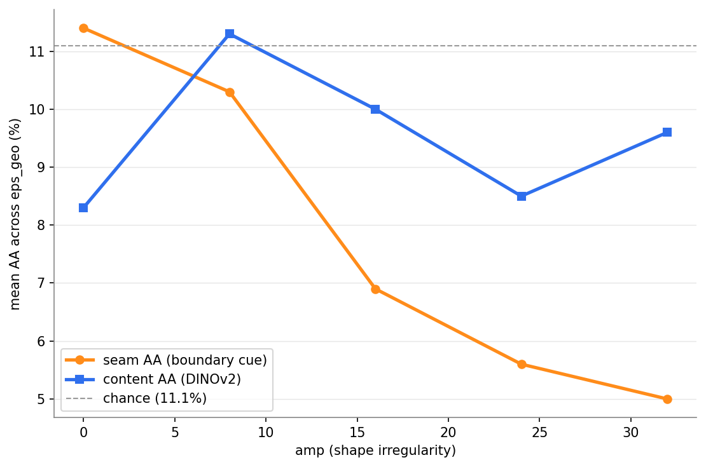

JigSync reassembles degraded, shuffled, and arbitrarily rotated pieces —
synchronizing pairwise pose, anchoring global orientation from content cues, and
recovering each piece's position and rotation.
Learned jigsaw solvers are converging on benchmarks that deliver every fragment upright,
reducing reassembly to a permutation problem. We study the strictly larger problem in
which each fragment also carries an unknown ℤ4 rotation, and show
that the synchronization pipeline used to attack it has a provable blind spot. Our main
result is a gauge-unobservability theorem: the minimum of a weighted least-squares
translation-synchronization objective is exactly invariant to a uniform global rotation of
every measurement, so no residual-based criterion can recover global orientation. The
theorem also implies the fix — an orientation anchor estimated from single-fragment
content, which lies outside its scope. Anchoring more than doubles selection-ceiling
accuracy and lets JigSync attain 63.8% and
31.8% absolute accuracy on GAP-3 and GAP-5 — the highest
reported on both — while additionally recovering a per-piece rotation neither
benchmark requires. We release Met-Sweep, a degradation protocol that sweeps shape,
erosion, photometry, grid size, and rotation independently.
36.72%
GAP-3 selection ceiling, up from 16.61% — gauge fix alone, largest effect measured
93.6% / 94.1%
Per-piece rotation accuracy, GAP-3 / GAP-5, from content alone
1st
on absolute accuracy at both grid sizes — the only GAP method that also recovers rotation
The problem: pieces have no "up"
Real fragmented material has no canonical orientation — a potsherd, a shredded
document strip, or a fresco fragment has no "up" until the reconstruction supplies one.
Almost every learned jigsaw solver sidesteps this: fragments are delivered upright, so the
task actually solved is a permutation problem over N slots. We study the strictly
larger pose-recovery problem in the wreath product ℤ4 ≀ SN,
of size 4N·N!, in which each fragment independently carries one of four
rotations. At N = 9 this is a 262,144× larger search space than the
permutation-only setting.
Key insight: the gauge is invisible to the objective
Gauge-unobservability theorem. Synchronization recovers relative pose between
fragments, then a translation-synchronization solve fixes their absolute positions.
Rotating every measurement in that graph by the same 90° multiple leaves the
minimum of the weighted least-squares objective exactly unchanged — a proof, not
an empirical observation. A solver that picks among the four candidate global orientations by
comparing residuals is therefore not making a noisy decision; it is making no decision at
all. All four candidates agree to 10–12 decimal places on both real and synthetic data,
and we measured a downstream evaluator swing between 100% and 11% accuracy on individual
puzzles from a single flipped floating-point tie.
The theorem also says where the missing information can come from: it constrains
only quantities derived from the pairwise measurement graph, so an orientation estimate
computed from single-fragment content lies outside its scope and can break the tie
with real signal. Installing such a content anchor raises the GAP-3 selection ceiling from
16.61% to 36.72% absolute accuracy and the GAP-5 ceiling from
5.38% to 10.66% — the single largest effect in our entire
experimental program. Six other inference-level interventions we tried each moved the same
number by less than 1.2 points.

Unary orientation head after the min-over-gauge fix, GAP-3: cell accuracy climbs from
11.7% to a 36.5% peak and rotation accuracy from 57.5% to a 95.8% peak across epochs,
both well above chance (11.1% and 25%).
Method

JigSync recovers the global pose of shuffled and rotated puzzle pieces. Given
degraded pieces, a pairwise pose model estimates relative rotations and positions.
Relative rotations are synchronized and resolved using unary orientation probabilities
computed per fragment (and therefore independent of the pairwise measurement graph) to
obtain absolute rotations. These rotations condition pairwise decoding to obtain relative
positions, followed by translation synchronization and assignment. The final pose is used
for reassembly.
Dense tiered pose vocabulary — every ordered fragment pair gets a pose
class at a resolution that decreases with distance (192 classes total), instead of the
17 classes a grid-adjacent-only vocabulary would give.
Spectral rotation synchronization — relative rotations are combined into a
Hermitian connection matrix; its leading eigenvector gives a global least-squares fit on
the circle, filtered for cycle-consistency.
Bearing-only translation synchronization — mid/far-tier edges that know
direction but not distance enter the solve as anisotropic half-line constraints rather
than fabricated point estimates.
Gauge anchoring & ρ-conditioned decoding — the content-derived
unary rotation both resolves the free gauge and constrains the pairwise decode, turning a
strong unary signal (∼94%) into a constraint on a weaker pairwise one (44–52%).
Component progression, no retraining. ρ-conditioned decoding gives the best AA
(41.33%) and SRA (33.21%) without oracle edges — but is not the best on PA
(8.50%): both the unary-anchored oracle-edge variant (11.00% PA) and the stack-matched
variant (17.00% PA, 43.39% AA, 40.00% SRA) beat it there. No single stage dominates on all
three metrics, and we say so rather than reporting only the flattering one.
Results on GAP
Full 3,000-puzzle test splits, baseline numbers as reported by
PuzzleFlow. JigSync attains the highest absolute accuracy on both
grids (+0.9 over PuzzleFlow on GAP-3, +2.7 on GAP-5) and the highest SRA on GAP-5 (+1.7),
while remaining second on perfect accuracy at both sizes — the only method here that
also recovers a per-piece ℤ4 rotation, a degree of freedom neither benchmark
requires.
Method
GAP-3
GAP-5
PA
AA
SRA
PA
AA
SRA
Greedy
0.0
11.6
8.6
0.0
4.1
3.7
GA
0.0
11.1
8.5
0.0
11.1
8.5
JPDVT
0.0
11.2
8.4
0.0
3.9
3.2
PuzLM
0.0
14.8
9.9
0.0
7.8
4.5
JigsawGAN
4.6
45.3
35.9
0.0
18.0
12.0
DiffAssemble
16.4
50.5
43.4
0.0
21.9
14.7
FCViT
25.2
60.7
47.6
0.0
20.4
13.8
PuzzleFlow
28.5
62.9
55.7
0.3
29.1
19.8
JigSync (ours)
27.0
63.8
51.0
0.1
31.8
21.5
PA = fraction of puzzles solved exactly. AA = fraction of fragments in the correct grid
cell. SRA = fraction of fragment pairs with correct relative spatial relationship.
Bold = best, underlined = second best.
Context under real rotation
The GAP comparison above still delivers fragments upright, so it never tests the rotation
degree of freedom this paper is actually about. The comparison that does is against a
cue-specialized, content-only comparator — identical encoder and heads, no
cross-fragment context — trained on the same mixture and evaluated on a corrected
Met-Sweep corpus with real per-piece rotation.
Context wins 7 of 8 conditions across both GAP grids and five
Met-Sweep grid sizes, by 1–3 points of grid-cell accuracy. The margin is a floor
rather than an estimate: the no-context comparator's own number uses a per-example
self-selected gauge, closer to a best-of-four search than to a single deployed
prediction, while ours is the single-shot deployable metric.

The reversal in rotation accuracy: a searched min-over-gauge objective flatlines at
0.39–0.47 across epochs (first misread as a capability ceiling), while the same
data with the per-batch search replaced by a direct fixed-gauge target climbs to 0.938
— matching the upright-GAP rotation number.
Qualitative reassembly
Qualitative reassembly on Met-Sweep (shape irregularity A = 0) and GAP-3.
Red outlines mark fragments placed in the wrong cell. JigSync additionally recovers a
per-piece ℤ4 rotation; the baselines resolve position only.
(Scroll horizontally — full-resolution gallery.)
When does a denser measurement graph help?

All-pairs AA against per-edge far-tier accuracy qfar, 150 seeds/point,
for n = 3 (left) and n = 5 (right). Dashed: grid-adjacency
reference. Dotted: our measured qfar ≈ 0.132.
Spectral synchronization has a known recoverability threshold in graph degree, suggesting
all-pairs graphs should dominate fixed-degree grid adjacency at large N. Under our
measured (not assumed) per-tier error rates, the crossover sits at
qfar* ≈ 0.21 for n = 3 and
≈ 0.07 for n = 5.
Our measured qfar ≈ 0.132 sits below the
n = 3 threshold but above the n = 5 one — the larger
grid, where density was assumed least affordable, is the one where it should already pay
off. This is a falsifiable prediction we report as-is: the end-to-end retrain that would
confirm it has not been run.
Where the boundary-to-content crossover lives
A long-standing intuition holds that boundary-continuity cues dominate reassembly until
erosion destroys them, after which content cues take over. Sweeping shape irregularity
A independently reveals the real controlling variable: mean seam accuracy degrades
monotonically from 11.4% at A = 0 to 5.0% at A = 32, while frozen
DINOv2 content accuracy stays flat at 8–11% throughout. Wavy fracture boundaries
defeat edge-band seam matching in a way content embeddings never share.

Seam accuracy degrades monotonically with shape irregularity A while content accuracy
stays flat, averaged over all four erosion levels. Chance is 11.1%.
What we tried and didn't oversell
TRIED, NOT ADOPTED
An obvious lever we hadn't enforced: the model's predictions for a fragment pair in
each direction should agree. Symmetrizing them gives a small, consistent AA gain at
both grid sizes (GAP-3: 41.33% → 42.33%; GAP-5:
12.26% → 12.68%) — but it isn't statistically significant at
n = 200 (paired t = 1.06 / 0.95), and is mixed on PA/SRA. Real,
tried, and not adopted as the default decode path.
SEARCH INSTABILITY
The min-over-gauge objective re-searches its target every batch. Under genuine
per-puzzle gauge diversity this flat-lines rotation accuracy at 0.39–0.47; an
annealed soft-min did not close the gap at the settings tried.
NOT A CLEAN SWEEP
ρ-conditioned decoding is the best free gain on AA/SRA but does not lead on
PA, where oracle-edge variants score higher. We report the trade-off rather than the
single flattering metric.
TRADE-OFF ON PA
JigSync leads on absolute accuracy at both grid sizes but trails PuzzleFlow on perfect
accuracy, and a retrain intended to lift PA with a synthetic mixture regressed every
measured number. The pre-retrain checkpoint remains our reference.
Full ablation grids, the fBm negative control, and the eliminated-mechanism study for
absolute orientation accuracy are in the supplementary material.
BibTeX
@article{jigsync,
title = {JigSync: Gauge-Resolved Synchronization for Jigsaw
Reassembly under Unknown Piece Orientation},
author = {Pahari, Soham and Aich Roy, Antik and
Bhattacharya, Ujjwal},
journal = {arXiv preprint arXiv:2609.18379},
eprint = {2609.18379},
archivePrefix = {arXiv},
primaryClass = {cs.CV},
year = {2026}
}